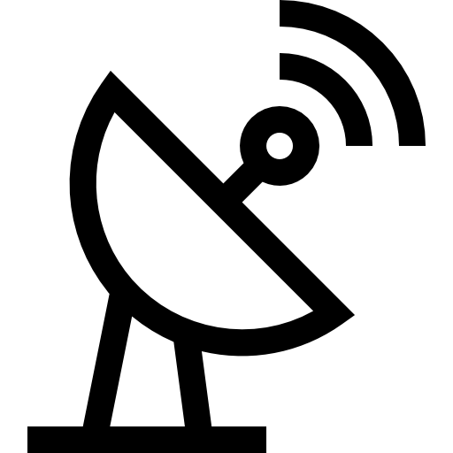
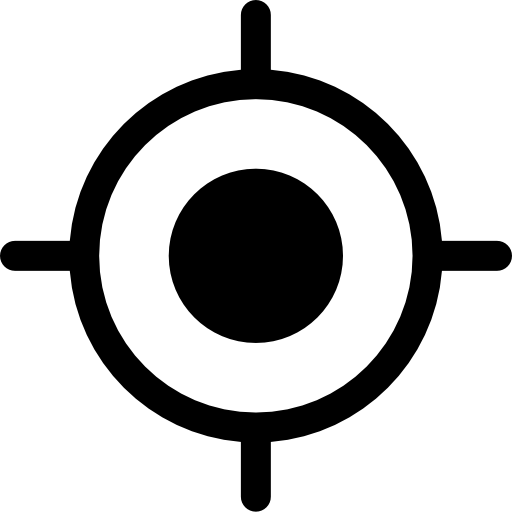
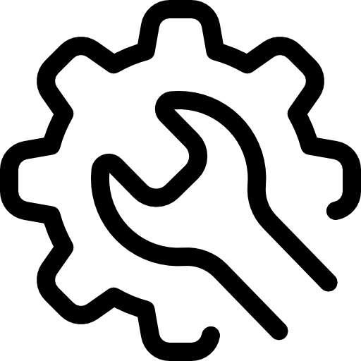

Lukez Bunz

GPS...
🌙
Saving changes...
Scanning Street...
📡 GPS · 🧭 N 0°
...
0
Run: All
0
0
🔓 Lock Run

All
⬅️ Left side
➡️ Right side
Select run
0
0

Mode
×
Settings
Edit
KML
Bling
Boundary
Geofence
Select
Add
Edit
Delete
🎨 Colours
🖼️ Icons
Add
Edit
Delete
Add
Edit
Delete
×
Bin Tools
×
Tap bins to select, or drag a box around several
➕ Add Bin
🧲 Consolidate
▭ Box Select
↔️ Move Selected
🗑️ Delete Selected
✕ Clear
check filter
📍 — · 🧭 —
...
0
Select Filters
×
Stream
🗑️♻️🌳 All
🗑️ Garbage
♻️ Recycle
☀️ Summer Recycle
🌳 FOGO
Data Source
All Data (Solo + MPSC)
Solo Only
MPSC Data Only
Collection Day
All
Mon
Tue
Wed
Thu
Fri
Week Cycle
All Weeks
Week A
Week B
Runs
Clear All
Apply Filters
Edit Bin
×
Stream
🗑️ Garbage
♻️ Recycling
🌳 FOGO
Bin Size
80L
120L
240L
Bin Type / Make
Sulo
Mastec
Nylex
Other
Lid Colour
🔴 Red
🟢 Green
🟡 Yellow
🔵 Blue
🌲 Dark Green
⚠️ Missing
Bin Serial Number *
Kerbside Bin Flip GPS Coordinates
📍 Use Live GPS
Choose on Map
Cancel
Save Bin
Edit Property & Runs
×
Address
Collection Day
Mon
Tue
Wed
Thu
Fri
Garbage Run
Recycling Run & Week
Week A
Week B
☀️ Summer Recycling Run
FOGO Run & Week
Week A
Week B
Property Flags / Notes (e.g. Locked gate)
Property GPS Coordinates (House Location)
📍 Use Live GPS
Choose on Map
Cancel
Save Changes
📍 Click Location on Map
×
Selected:
None
Cancel
Apply Coordinate
Rate Property / Add Notes
×
Star Rating
★
★
★
★
★
Driver Notes / Access Comments
Cancel
Save Review
🎨 Customise map colours
Only the current filtered run is shown.
×
Cancel
Apply colours
✏️ Edit imported KML/KMZ —
×
🚧 Geofences
×
➕ New
📥 Import
Which run(s)?
×
All runs
🏷️ Access notes
×
Select houses on the map first, then use Drive in/Reverse in/One side to tag them.
Property Details
×
Close
Cancel
OK
📍 Update Bin GPS Location?
Cancel
Save Location
⏰ Add Reminder Note
Reminder Message:
Alert On Date (Optional):
Cancel
Save Alert
🚛 Select Run
×
1. Stream
2. Data Source
3. Day
4. Week
5. Run
Clear All
Apply Filters
 0
0